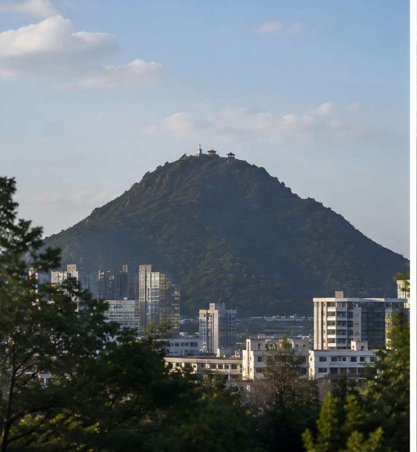
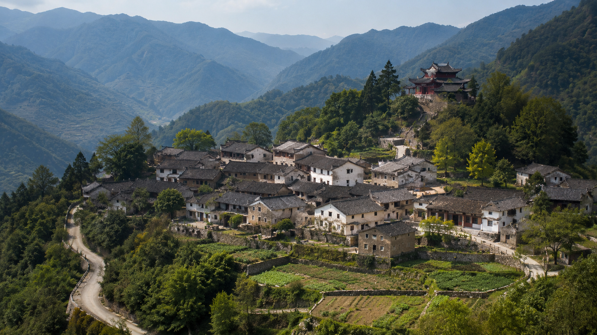

想在周末暂时远离城市的喧嚣，又不想舟车劳顿地前往太远的地方？位于九章市北部的九章山，或许是一个不错的选择。
这里山林茂密、空气清新，春夏时节满山翠绿，进入秋季后，山间林木又会呈现出深浅不一的红色与金色。天气晴朗时，从前山观景台向远处望去，可以看到连绵的山脊、隐藏在云雾中的溪谷，以及依山而建的九章山村。

和九章市周边一些商业开发较为成熟的景区不同，九章山至今仍保留着较为自然的山林风貌。这里没有过多的人工建筑，也很少有喧闹的商业街，因此一直受到摄影爱好者、徒步游客和本地居民的喜爱。
登山建议：优先选择前山大路，谨慎进入后山小径
九章山目前主要有两种上山方式。
对于普通游客来说，最推荐的是从前山主入口进入，沿修建较为完善的登山大路上山。这条路线坡度相对平缓，沿途设有部分休息区域和观景平台，整体路况较为稳定，适合家庭出游以及缺乏户外经验的游客。
不想徒步的游客，也可以选择驾车沿盘山公路前往。盘山公路能够直接通往九章山村，但沿途弯道较多，部分路段临近山坡和谷地。遇到雨雪、大雾天气时，路面容易湿滑，驾驶员应当减速慢行，切勿在弯道超车。
需要特别提醒的是，九章山村后方分布着多条由村民长期行走形成的山间小路。其中部分道路过去曾用于采药、放牧和运输山货，并不是面向游客修建的正式登山路线。
这些后山小路坡度较大，部分路段紧贴山崖，缺少护栏、台阶和明显的方向标识。雨后岩石和泥土较为湿滑，一旦偏离道路，也很难及时获得救援。
过去几年间，后山区域曾发生过数起游客滑倒、迷路以及意外坠落事故。因此，除非具备专业户外经验，并携带绳索、头盔、定位设备等必要装备，否则不建议普通游客擅自进入后山。
请勿为了拍照翻越护栏，也不要轻信网络上所谓的“隐秘捷径”。九章山最值得欣赏的风景，在正规路线同样能够看到。
藏在山间的九章山村
沿盘山公路行至接近山顶的位置，便能看到九章山村。
从远处航拍时，这座村庄仿佛建在山顶。但实际上，它位于山峰附近一片较为平缓的山间台地，四周被山林和岩壁包围，位置相对隐蔽。

村中目前仍保留着不少石墙、木门和青瓦屋顶的传统民居。狭窄的道路顺着地势延伸，房屋之间分布着菜地、古树和小型水渠。部分村民仍保持着种植山茶、晾晒药材和制作腌菜的生活习惯。
每逢节日，村民会在村中空地摆设长桌，准备自家酿制的米酒、山野菜和传统糕点。即使不少年轻人已经离开村庄前往城市发展，过年和重要祭祀期间，仍会有人专程返回故乡。
九章山村的村民普遍热情，但这里毕竟不是经过统一管理的商业景区。游客进入村庄后，应尽量避免随意进入居民住宅、拍摄村民私人生活，也不要破坏菜地、果树和祭祀用品。
香火旺盛的九章寺
九章山村最有名的地方，是位于村庄东侧山坡上的九章寺。
据村中老人介绍，寺庙最初修建于数百年前，后来曾经历过多次损毁和修缮。如今寺庙规模并不算宏大，却因为“祈愿灵验”而在九章市一带颇有名气。
每逢初一、十五以及春节前后，都有不少市民专程驾车来到九章山村上香。寺中以求平安、学业和事业最为常见，也有人在愿望实现后重新回到寺庙还愿。
村民之间还流传着许多与九章寺有关的故事。有人说，过去进山赶路的人只要在寺前停留片刻，便能避开突如其来的暴雨；也有人说，村里不少外出求学的孩子，临行前都会由家人带到寺里祈福。
这些传说究竟有多少真实成分，很难得到证实。但从常年不断的香火、挂满树枝的祈愿牌，以及节日期间排到寺门外的人群来看，九章寺早已成为许多本地居民重要的精神寄托。
需要注意的是，寺庙附近禁止吸烟和使用明火。游客上香时应遵守现场规定，不要在山林区域自行焚烧纸钱，以免引发火灾。
“一方水土养一方人”
虽然九章山村规模不大，但从这里走出去的教师、医生、企业经营者和政府工作人员并不少。九章市民间一直流传着“九章山里出人才”的说法。
在此前举行的九章山生态保护座谈会上，九章市市长王至欣也曾提到九章山村的发展：
“常说一方水土养一方人。九章山不仅孕育了秀丽的自然风景，也养育了一代又一代勤劳坚韧的九章人。许多从这里走出去的人，在不同领域取得了成绩，但无论走得多远，他们与这片土地的联系都不会消失。”
王至欣表示，九章山的价值并不仅仅在于旅游开发。山林、水源、传统村落和地方文化，都是九章市不可替代的一部分。
“发展不能以破坏环境为代价。我们既要改善道路和必要的安全设施，也要避免无序开发。保护好九章山，就是保护九章市自己的根和记忆。”
近年来，当地已陆续对前山道路、盘山公路和部分观景区域进行维护，同时增设安全警示牌，劝阻游客进入未经开发的后山区域。
出行提示
前往九章山前，建议提前查看天气情况。雨天、大雾以及连续降雨后的两至三天内，应尽量避免登山。
驾车前往九章山村的游客，需要控制车速，并在急转弯前提前鸣笛。部分路段较窄，遇到对向车辆时应主动避让。
徒步游客应选择前山正规路线，穿着防滑鞋，并携带饮用水、充电设备和基础急救用品。天黑前应及时下山，不要临时改变路线进入后山。
九章山的美，在于它保留了自然、安静和古朴的一面。来到这里，不必执着于寻找所谓“无人知道的风景”。沿着安全的大路缓缓上山，看看远处的群峰，逛逛山间村落，再到九章寺中听一阵钟声，已经足以感受到这片山水的独特之处。
安全欣赏风景，尊重当地生活，或许才是打开九章山最好的方式。